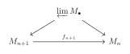
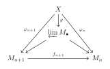
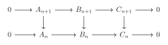
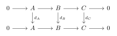
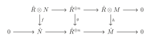
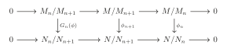
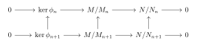
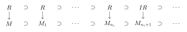
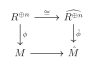

第 10 章：Dedekind 整环与完备性
我们在前文讨论了维数为 \(0\) 的 Noether 环。在本节中，我们来讨论维数为 \(1\) 的 Noether 整环.即任意非零素理想都是极大的。
§ 01Dedekind 整环
命题 1.1
设 \(R\) 是 Noether 整环，\(\dim R=1\)，则任意非零、非单位的理想 \(I\) 可以唯一表示为 \(I=\mathfrak{q}_1\cdots\mathfrak{q}_n\)，其中 \(\mathfrak{q}_i\) 是准素的且 \(r(\mathfrak{q}_i)\) 是不相交的。
证明
设 \(I=\mathfrak{q}_1\cap \cdots\cap\mathfrak{q}_n\) 是极小分解，则 \(r(\mathfrak{q}_i)\neq r(\mathfrak{q}_j)\) 是极大的。故 \(r(\mathfrak{q}_i)+r(\mathfrak{q}_j)=(1)\)，这表明 \(\mathfrak{q}_i+\mathfrak{q}_j=(1)\)。由引理 2.8知 \(I=\prod \mathfrak{q}_i\)。
反过来，若 \(I=\prod \mathfrak{q}_i\)，类似的有 \(I=\cap \mathfrak{q}_i\)，由于 \(\dim R=1\) 故每个 \(r(\mathfrak{q}_i)\) 均为相伴的。利用命题 2.40知唯一确定。
定义 1.2
\(K\) 是域，一个离散赋值(discrete valuation)是 \(K^*\) 上的一个满射 \(\nu:K^*\rightarrow \mathbb{Z}\) 使得 \(\nu(xy)=\nu(x)+\nu(y)\) 且 \(\nu(x+y)\ge \min (\nu(x), \nu(y))\)。令 \(\nu(0)=+\infty\) 我们可以扩张 \(\nu\) 到 \(K\) 上。可以验证 \(R=\left\{x\Big| \nu(x)\ge 0\right\}\) 是 \(K\) 的子环，称为 \(K\) 的赋值环。一般的，整环 \(R\) 称为离散赋值环(discrete valuation ring)，即 DVR，若它是它的分式域的 DVR。
例 1.3
我们有 \(\nu:\mathbb{Q}^*\rightarrow \mathbb{Z},p^n\cdot \frac{a}{b}\mapsto n\)，其中 \((a,p)=(b,p)=1\)，\(p\) 是固定的素数。则 \(\mathbb{Q}\) 的 DVR 是局部化 \(\mathbb{Z}_{(p)}\)。类似的，对不可约多项式 \(f(x)\in k[x]\)，我们可以定义 \(\nu:k(x)^*\rightarrow \mathbb{Z},f^n(x)\cdot \frac{g(x)}{h(x)}\mapsto n\)，则 \(k(x)\) 的 DVR 是 \(k[x]_{(f)}\)。
我们有如下关于 DVR 的命题：
-
若 \(\nu(x)=0\)，则 \(\nu(x^{-1})=0\)，故 \(x^{-1}\in R\)；反过来若 \(\nu(x)>0\) 则 \(x^{-1}\notin R\)。因此 \(\nu(x)=0\) 当且仅当 \(x\) 是 \(R\) 中的单位。
-
若 \(\nu(x)=\nu(y)\ge 0\)，则 \(\nu(x/y)=0\)，故 \(\frac{x}{y}\in R\)，进而 \((x)\subset (y)\)。类似的有 \((y)\subset (x)\)，故 \((x)=(y)\subset R\)。
-
对 \(R\) 的理想 \(I\)，取 \(x\in I\) 使得 \(\nu(x)\) 取到最小值。对任意 \(y\in I\)，\(\nu(y)\ge \nu(x)\)，故 \(\frac{y}{x}\in R\)，\(y\in (x)\)，即 \(I=(x)\)。于是 \(R\) 是 PID。
-
由上两个命题，我们有 \(R\) 的所有理想与 \(\mathbb{Z}_{\ge 0}\) 之间的一一映射。
-
取 \(\pi\in R,\nu(\pi )=1\)，则 \(\nu(\pi^n)=n\)。\(R\) 中所有理想满足降链：
\[ (1)\supset (\pi )\supset (\pi^2)\supset \cdots \]故 \(R\) 是 Noether 的。\(R\) 是极大理想为 \((\pi)\) 的局部环且任意理想均为极大理想的幂，这表明 \(\dim R=1\)。我们称 DVR 的极大理想的生成元为uniformizer。回忆任意赋值环都是整闭的，故任意 DVR 都是整闭的。
例 1.4
我们可以给出一个是赋值环但不是 DVR 的例子。
考虑 \(R'=\bigcap_{n\ge 0} k[x^{\frac{1}{2^n}}]\subset \overline{k(x)}\)，\(K\) 是 \(R'\) 的分式域。考虑 \(\nu:K^*\rightarrow \mathbb{Q},f\mapsto \mathrm{ord}_0f\in \mathbb{Q}\)，可以验证这是一个赋值且它的赋值环是
然而 \(R\) 不是 Noether 的因为我们可以找到 \(x_n\)，\(\nu(x_n)=\frac{1}{2^n}\)，则
不是稳定的，故 \(R\) 不是 DVR。
定义 1.5
极大理想为 \(\mathfrak{m}\) 的 Noether 局部环 \(R\) 称为正规局部环(regular local ring)，若作为向量空间 \(\dim R=\dim _{R/\mathfrak{m}} \mathfrak{m}/\mathfrak{m}^2\)。显然 DVR 是正规局部环。
命题 1.6
\(R\) 是 Noether 局部整环，维数为 \(1\)，\(\mathfrak{m}\) 是极大理想，\(k=R/\mathfrak{m}\)。则如下条件等价：
- \(R\) 是 DVR；
- \(R\) 是整闭的；
- \(\mathfrak{m}\) 是主理想；
- \(R\) 是正规局部环；
- 任意非零理想均为 \(\mathfrak{m}\) 的幂；
- 存在 \(x\)，任意非零理想均形如 \((x^k)\)。
证明
我们已经证明 \((1)\Longrightarrow (2)\)。
\((2)\Longrightarrow (3)\)：令 \(0\neq a\in \mathfrak{m}\)，则 \(r(a)\) 是非零素理想，由于 \(\dim R=1\) 故是极大理想，因此 \((a)\) 是准素的。由推论 2.20知存在 \(k\)，\(\mathfrak{m}^k\subset (a),\mathfrak{m}^{k-1}\nsubseteq (a)\)。取 \(b\in \mathfrak{m}^{k-1}\setminus(a)\)，并取 \(x=\frac{a}{b}\) 是 \(R\) 的分式环中的元素。\(x^{-1}\notin R\)，否则 \(b=x^{-1}a\in \mathfrak{m}^k\)。由条件 \(x^{-1}\) 不在 \(R\) 上整，于是 \(x^{-1}\mathfrak{m}\) 不包含于 \(\mathfrak{m}\)，否则由 Cayley-Hamilton 定理知存在多项式 \(f\)，\(f(x^{-1})\mathfrak{m}=0\)，即 \(f(x^{-1})a=0\)，故 \(f(x^{-1})=0\)，矛盾！注意到 \(x^{-1}\mathfrak{m}=\frac{b\mathfrak{m}}{a}\subset \frac{\mathfrak{m}^k}{a}\in R\)，故 \(x^{-1}\mathfrak{m}=R\)，即 \(\mathfrak{m}=Rx=(x)\)。
\((3)\Longrightarrow (4)\) 显然。
\((4)\Longrightarrow (5)\)：设 \(\mathfrak{m}/\mathfrak{m}^2\) 由 \(x\) 生成，则 \(\mathfrak{m}=(x)\)。对任意理想 \(I\neq 0,I\neq (1)\)，则 \(I\subset \mathfrak{m}\)。同上存在 \(n\)，\(\mathfrak{m}^n\subset I\)，故可以找到 \(k\)，\(I\subset \mathfrak{m}^k,I\nsubseteq \mathfrak{m}^{k+1}\)。选取 \(y\in I\setminus \mathfrak{m}^{k+1}\)，则 \(y=x^kz\)，其中 \(z\in R\) 且 \(z\notin \mathfrak{m}\)。于是 \(z\) 是 \(R\) 中的单位，且 \((y)=(x^k)=\mathfrak{m}^k\)。
\((5)\Longrightarrow (6)\)：只需证明 \(\mathfrak{m}=(x)\)。利用 Nakayama 引理知 \(\mathfrak{m}\neq \mathfrak{m}^2\)。取 \(x\in \mathfrak{m}\setminus \mathfrak{m}^2\)，则由条件 \((x)=\mathfrak{m}^n\)，于是 \((x)=\mathfrak{m}\)。
\((6)\Longrightarrow (1)\)：容易验证 \(\nu :a\mapsto n\) 若 \(a=(x^n)\)，这可以扩张成 \(R\) 的分式环上的赋值，且 \(R=\left\{x:\nu(x)\ge 0\right\}\)。
命题 1.7
\(R\) 是 Noether 整环，维数为 \(1\)，则如下条件等价：
- \(R\) 是整闭的；
- 任意准素理想是素理想的幂；
- 任意局部化 \(R_\mathfrak{p}\) 是 DVR。
若 \(R\) 满足如上条件，我们称 \(R\) 是 Dedekind 整环(D.D.)。
证明
\((1)\Longleftrightarrow(3)\)：由上一命题中的 \((1)\Longleftrightarrow(2)\)，回忆我们有 \(R\) 是整闭的当且仅当任意局部化 \(R_\mathfrak{p}\) 是整闭的。
\((2)\Longrightarrow (3)\)：由于 \(R_\mathfrak{p}\) 是 Noether 局部整环维数为 1 且极大理想为 \(\mathfrak{p}^e\)，对任意 \(R_\mathfrak{p}\) 的理想 \(I\)，存在 \(m\)，\((\mathfrak{p}^e)^m\subset I\)，则 \(I^c\supset \mathfrak{p}^m\)。由上一命题中的 \((1)\Longleftrightarrow (5)\) 我们有 \(R_\mathfrak{p}\) 是 DVR。
\((3)\Longleftarrow (2)\)：设 \(I\subset R\) 是准素的，\(r(I)=\mathfrak{p}\)。\(I^e\subset R_\mathfrak{p}\)，故由上一命题中的 \((1)\Longleftrightarrow (5)\) 知存在 \(n\)，\(I^e=(\mathfrak{p}^e)^n\)。对素理想 \(\mathfrak{q}\neq \mathfrak{p}\)，\(I_\mathfrak{p}=(\mathfrak{p}^n)_\mathfrak{q}\) 且 \(I_\mathfrak{p}=(\mathfrak{p}^n)_\mathfrak{p}\)，因此由命题 2.18知 \(I=\mathfrak{p}^n\)。
推论 1.8
\(R\) 是 Dedekind 整环，则任意非零理想能被唯一分解成素理想的乘积。
证明
利用命题 2.48。
例 1.9
\(k[x,y]\) 是 UFD 但不是 Dedekind 整环，因为 \(\dim k[x,y]=2\)。
例 1.10
\(\mathbb{Z}[\sqrt{13}]\) 是\(\mathbb{Z}\) 在 \(\mathbb{Q}(\sqrt{-13})\) 上的整闭包，故它是整闭的。由 Hilbert 基定理，这是 Noether 的，由上升定理我们得到 \(\dim \mathbb{Z}[\sqrt{-13}]=\dim \mathbb{Z}=1\)。因此 \(\mathbb{Z}[\sqrt{-13}]\) 是 Dedekind 整环。然而它不是 UFD 的因为 \(14=2\cdot 7=(1+\sqrt{-13})(1-\sqrt{-13})\) 是两种分解。
例 1.11
一般的，代数数域上的整数环是 D.D.。
例 1.12
PID 是 D.D.。首先显然是 Noether 的且维数为 \(1\)。对任意局部化 \(R_\mathfrak{p}\)，也是 PID，故是 DVR，因此 \(R\) 是 D.D.。
命题 1.13
D.D. 是 PID 当且仅当是 UFD。
证明
若 D.D. 是 UFD，设 \(I=P_1\cdots P_n\neq 0\)。注意到对 \(x\in P_i,x=a_1\cdots a_m\)，故 \((x)=(a_1)\cdots (a_m)\subset P_i\)。\((a_i)\) 是素的，故存在 \(i\)，\((a_i)=P_i\)。因此 \(I=(a_1\cdots a_m)\) 是主理想。反过来同理。
命题 1.14
\(R\) 是 D.D. 且仅有有限个素理想，则 \(R\) 是 PID。
证明
设这些素理想是 \(\mathfrak{p}_1,\cdots,\mathfrak{p}_n\)。对任意理想 \(I\neq (0)\)，我们有分解 \(I=\mathfrak{p}_1^{a_1}\cdots \mathfrak{p}_n^{a_n}\)。故 \(\mathfrak{p}_i^{a_i}\neq 0\)，由 Nakayama 引理知存在 \(x_i\in \mathfrak{p}_i^{a_i}\setminus \mathfrak{p}_i^{a_i+1}\)。由于 \(r(\mathfrak{p}_i^{a_i+1}+\mathfrak{p}_j^{a_j+1})\supset \mathfrak{p}_i\bigcup \mathfrak{p}_j\)，\(\mathfrak{p}_i,\mathfrak{p}_j\) 是极大的，我们有 \(\mathfrak{p}_i^{a_i+1}+\mathfrak{p}_j^{a_j+1}=(1)\)。
因此投影映射 \(\pi:R\rightarrow \prod R/\mathfrak{p}_i^{a_i}\) 是满射，存在 \(x\in I,\pi(x)=(\overline{x_1},\cdots,\overline{x_n})\)，则 \((x)=\prod \mathfrak{p}_i^{a_i}=I\)。
1.1 分式理想
定义 1.15
\(R\) 是整环，\(K\) 是分式域。\(K\) 的一个 \(R-\)子模 \(I\) 称为分式理想(fractional ideal)，若对某个 \(0\neq x\in R\)，\(xI\subset R\)。\(R\) 称为整理想若 \(I\subset R\)。
例 1.16
对任意 \(u\in K\)，\(uR\) 是分式理想，也称为主分式理想。
例 1.17
取 \(R=\mathbb{Z}\)，\(\bigcap_{n\ge 0}\mathbb{Z}/2^n=\left\{\frac{x}{2^n}\Big| x\in \mathbb{Z},n\in \mathbb{N}\right\}\) 不是分式理想。
例 1.18
\(K\) 的任意有限生成子模均是分式理想。若 \(R\) 是 Noether 的，分式理想是有限生成的。
定义 1.19
子模 \(I\subset K\) 称为可逆的(invertible)，若存在 \(J\subset K,IJ=R\)。
事实上 \(J\) 是唯一的，因为若 \(IJ=R\)，则 \(J\subset (R:I)\)。但 \((R:I)=(R:I)IJ\subset RJ=J\)，故 \(J=(R:I)\) 是由 \(I\) 唯一决定的。因此我们可以在可逆子模上定义群结构。
例 1.20
考虑 \(R=\mathbb{Z}+2\sqrt{-1}\mathbb{Z}\)，则 \(K=\mathbb{Q}(\sqrt{-1})\)，我们可以验证 \(I=2\mathbb{Z}[\sqrt{-1}]\) 不可逆但是分式理想：注意到 \((R:I)=\mathbb{Z}[\sqrt{-1}]\)，但 \((R:I)I\neq R\)。然而它是可逆的，因为 \(R=\mathbb{Z}[\sqrt{-1}]\) 且 \(I^{-1}=\frac{1}{2}\mathbb{Z}[\sqrt{-1}]\)。
命题 1.21
\(I\) 是 \(R\) 的分式理想，则如下条件等价：
- \(I\) 可逆；
- \(I\) 是有限生成的且对任意素理想 \(\mathfrak{p}\)，\(I_\mathfrak{p}\) 在 \(R_\mathfrak{p}\) 上可逆；
- \(I\) 是有限生成的且对任意极大理想 \(\mathfrak{m}\)，\(I_\mathfrak{m}\) 在 \(R_\mathfrak{m}\) 上可逆；
证明
\((1)\Longrightarrow (2)\)：\(I_\mathfrak{p} \cdot (R:I)_\mathfrak{p}=R_\mathfrak{p}\)，故 \(I_\mathfrak{p}\) 是可逆的，且由上讨论知 \(I\) 有限生成。
\((2)\Longrightarrow (3)\) 是显然的。\((3)\Longrightarrow (1)\)：我们希望证明 \(I\cdot (R:I)=R\)，由于 \(I\cdot (R:I)\) 是整理想，这需要证明 \(I_\mathfrak{m} \cdot (R:I_\mathfrak{m})=R_\mathfrak{m}\)。事实上这等价于证明 \((R:I)_\mathfrak{m}=(R_\mathfrak{m}:I_\mathfrak{m})\)。
设 \(I\) 由 \(x_1,\cdots,x_n\) 生成，则 \((R:I)=\bigcap_{i=1}^n (R:x_i)\)，故
故只需证明 \((R:x)_\mathfrak{m}=(R_\mathfrak{m},(x)_\mathfrak{m})\)。注意到我们有正合列
其中 \(f:y\mapsto xy+R\)。故我们有正合列
故 \((R:x)_\mathfrak{m}=\ker f_\mathfrak{m}=(R_\mathfrak{m},(x)_\mathfrak{m})\)
命题 1.22
设 \(R\) 是局部整环，则 \(R\) 是 DVR 当且仅当任意非零分式理想是可逆的。此时任意分式理想都是主理想。
证明
“\(\Longrightarrow\)”：\(xI\subset R\) 是 \(R\) 中的理想，故 \(xI=(u)\) 是主理想，进而 \(I=x^{-1}(u)\)，于是 \(I^{-1}=x(u^{-1})\) 是可逆的。
“\(\Longleftarrow\)”：由于 \(R\) 的任意整理想都是可逆的，因此是有限生成的，故 \(R\) 是 Noether 的。我们只需证明任意非零整理想都形如 \(\mathfrak{m}^k\)。
若该假设不成立，设 \(\Sigma\) 为所有不是 \(\mathfrak{m}\) 幂的非零理想的集合，则由 Zorn 引理我们可以取出 \(\Sigma\) 中的最大元 \(I\)。注意到 \(I\subset \mathfrak{m}\)，故 \(I\subset \mathfrak{m}^{-1}I\subset \mathfrak{m}^{-1}\mathfrak{m}=R\)。
由于 \(\mathfrak{m}^{-1}I\) 不是 \(\mathfrak{m}\) 的幂，故 \(I=\mathfrak{m}^{-1}I\)，于是 \(I=\mathfrak{m}I\)，这由 Nakayama 引理知矛盾！
推论 1.23
\(R\) 是整环，则 \(R\) 是 D.D. 当且仅当 \(R\) 的任意非零分式理想是可逆的。
证明
“\(\Longrightarrow\)”：设 \(I\) 是分式理想，则由 \(R\) 是 Noether 的知 \(I\) 是有限生成的，且由上命题 \(I_\mathfrak{m}\) 是可逆的。
“\(\Longleftarrow\)”：首先任意 \(R\) 的整理想是可逆的，因此是有限生成的，故 \(R\) 是 Noether 的。对任意素理想 \(\mathfrak{p}\)，\(R_\mathfrak{p}\) 的任意分式理想 \(M\) 是可逆的，故 \(A_\mathfrak{p}\) 是 DVR，则对任意素理想 \(0\neq \mathfrak{p}\subset \mathfrak{p}\)，我们有 \(0\neq \mathfrak{q}_\mathfrak{p}\subset \mathfrak{p}_\mathfrak{p}\)，故 \(\mathfrak{q}_\mathfrak{p}=\mathfrak{p}_\mathfrak{p}\)，这表明 \(\mathfrak{q}=\mathfrak{p}\)。因此 \(\dim R=1\)，由命题 2.50知是 D.D.。
设 \(\mathcal{I}\) 是所有分式理想的集合，设 \(R\) 是 D.D.，则我们可以定义 \(\mathcal{I}\) 上的群结构。设 \(I\) 是分式理想，\(I_\mathfrak{p}\) 是 DVR \(R_\mathfrak{p}\) 的分式理想，于是是主理想，故我们设 \(I_\mathfrak{p}=(x)\)，则我们可以定义 \(\nu_\mathfrak{p}(I)=\nu_\mathfrak{p}(x)\)，期中 \(\nu_\mathfrak{p}\) 是 \(R_\mathfrak{p}\) 上的赋值。于是我们得到了群同态 \(\nu_\mathfrak{p}:\mathcal{I}\rightarrow \mathbb{Z}\)，且若 \(I\subset J\)，则 \(\nu_\mathfrak{p}(I)\ge \nu_\mathfrak{p}(J)\)。
引理 1.24
\(\nu_\mathfrak{p}(I)=0\) 仅对有限多个素理想 \(\mathfrak{p}\) 不成立。
证明
由于存在 \(x\in K\)，\((x)I=J\subset R\)，我们有 \(\nu_\mathfrak{p}(x)+\nu_\mathfrak{p}(I)=\nu_\mathfrak{p}(J)\)。由于在 D.D. 中非零理想可唯一分解成素理想的乘积，故 \(\nu_\mathfrak{p}(x),\nu_\mathfrak{p}(J)=0\) 仅对有限多个 \(\mathfrak{p}\) 不成立，于是我们完成了证明。
由上引理我们有一个良定义的同态：
事实上这是一个同构。对 \((a_\mathfrak{p})\in \oplus_\mathfrak{p} \mathbb{Z},\phi(\prod_\mathfrak{p} \mathfrak{p}^{a_\mathfrak{p}})=(a_\mathfrak{p})\)，故 \(\phi\) 是满射。若 \(\phi(I)=0\)，则 \(I_\mathfrak{p}=R_\mathfrak{p}\) 对任意 \(\mathfrak{p}\)，故由局部性 \(I=R=(1)\)，于是 \(\phi\) 是单射。
考虑 \(\varphi:K^*\rightarrow \mathcal{I},x\mapsto (x)\)，我们称 \(\mathrm{coker} \varphi\) 为理想类群(ideal class group)，也称为Picard 群，对它的研究是代数数论的主题，我们这里浅尝辄止。
§ 02完备性
定义 2.1
一个 \(R-\)模的反向系统(inverse system)指的是 \(R-\)模序列 \(\left\{M_n\right\}\) 与 \(f_{n+1}:M_{n+1}\rightarrow M_n\)。若每个 \(f_n\) 都是满的则称这个反向系统是满系统。
反向极限定义为 \(\prod_n M_n\) 中所有满足 \(f_{n+1}(a_{n+1})=a_n\) 的 \((a_n)\) 构成的集合，记为 \(\varprojlim M_n\)，这是一个 \(R-\)模。
由定义，我们有下图交换：

其中 \(\varprojlim M_\bullet\rightarrow M_n\) 是自然投影。进一步我们有反向极限的万有性质，证明留作习题：
命题 2.2
对任意模 \(X\) 与同态 \(\varphi_n:X\rightarrow M_n\) 使得 \(f_{n+1}\circ \varphi_{n+1}=\varphi_n\)，则存在唯一的同态 \(g:X\rightarrow \varprojlim M_\bullet\) 使得下图交换：

反过来，该性质唯一确定了反向极限。
定义 2.3
一个 \(R\) 的滤链(filtration)是序列 \(M=M_0\supset M_1\supset M_2\supset \cdots\)。若 \(IM_n\subset M_{n+1}\) 对任意 \(n\) 成立，则称为\(I-\)滤链。若 \(IM_n=M_{n+1}\) 对充分大的 \(n\) 成立，则称为稳定 \(I-\)滤链。
定义 2.4
\(M\) 对滤链 \(M=M_0\supset M_1\supset \cdots\) 的完备(completion)是下反向系统的反向极限：
记为 \(\hat{M}\)。
若 \(M_{n+1}=IM_n\) 对任意 \(n\) 成立则称 \(\hat{M}\) 为 \(I-adic\) 完备。\(M\) 称为完备的(complete)若 \(M\rightarrow \hat{M},x\mapsto (\bar{x})_n\) 是同构。
注：从拓扑的角度看，我们可以讲 \(M_1,M_2,\cdots\) 看作一组 \(M\) 的拓扑基，对序列 \((a_n)_n\)，\(a_m-a_n\in M_{\min{m,n}}\)，故 \((a_n)_n\) 是 Cauchy 列，且两个等价的 Cauchy 列定义了同一个 \(\hat{M}\) 中的元素。因此代数中的完备与拓扑中的完备概念相同。
例 2.5
考虑 \(M=k[x]\supset (x)\supset (x^2)\supset \cdots\)，则我们有 \(\hat{M}\cong k[[x]]\)。
类似的考虑 \(\mathbb{Z}\supset p\mathbb{Z}\supset p^2\mathbb{Z}\supset \cdots\)，我们称 \(\hat{\mathbb{Z}}=\left\{\sum_{i=0}^{\infty} a_ip^i,0\le a_i\le p-1\right\}\) 为 \(p-adic\)环
命题 2.6
\(M\) 的 \(I-adic\) 完备同构于对任意稳定 \(I-\)滤链的完备。
证明
设我们有稳定 \(I-\)滤链 \(0\leftarrow M/M_1\leftarrow M/M_2\leftarrow \cdots\)。
首先 \(M_n\supset IM_{n-1}\supset \cdots \supset I^nM\)，我们有自然映射 \(M/I^nM\rightarrow M/M_n\)，这诱导了映射 \(f:\varprojlim M/I^nM\rightarrow \varprojlim M/M_n\)，反过来存在 \(c\)，对任意 \(n>c\)，\(M_n=IM_{n-1}=\cdots=I^{n-c}M_c\subset I^{n-c}M\)，故有自然映射 \(M/I^kM\rightarrow M/M_{k+c}\)，这诱导了映射 \(g:\varprojlim M/M^n\rightarrow \varprojlim M/I^nM\)。进一步我们可以验证 \(f\circ g=id,g\circ f=id\)，故我们完成了证明。
例 2.7
取 \(R=\mathbb{Z}_2\otimes \mathbb{Z}_2\)，\(I=0\otimes \mathbb{Z}_2\)，则 \(I^n=I\)，故 \(\hat{R}=R/I=\mathbb{Z}_2\otimes 0\)，且 \(\ker(R\rightarrow \hat{R})=I\)。
例 2.8
考虑 \(R=\bigcup_n k[x^{1/2^n}]\)，\(I=\bigcup_n x^{1/2^n}k[x^{1/2^n}]\)，则
故 \(I^{2^n}=I\)，这表明 \(I=I^n\)。同样有 \(\ker (R\rightarrow \hat{R})=I\)。
定义 2.9
一个反向系统的正合列是满足下图交换的反向系统 \(\left\{A_n\right\},\left\{B_n\right\},\left\{C_n\right\}\)：

命题 2.10
设 \(0\rightarrow \left\{A_n\right\}\rightarrow \left\{B_n\right\}\rightarrow \left\{C_n\right\}\) 正合，则
正合。进一步，若 \(\left\{A_n\right\}\) 是满的，则
正合。
证明
设 \(A=\prod A_n,B=\prod B_n,C=\prod C_n\)，考虑 \(d_A:A\rightarrow A,(a_n)\mapsto (a_n-f_{n+1}(a_{n+1}))\)，则 \(\varprojlim A_n=\ker d_A\)，我们有下图交换：

由蛇引理，我们有正合列：
进一步若 \(\left\{A_n\right\}\) 是满射，则 \(d_A\) 是满射，故 \(\mathrm{coker}d_A=0\)。
推论 2.11
设我们有正合列 \(0\rightarrow M'\rightarrow M\rightarrow M''\rightarrow 0\)，\(M=M_o\supset M_1\supset \cdots\) 是 \(M\) 的滤链，这诱导了 \(M'\) 的滤链 \(M'=M_0\cap M'\supset M_2\cap M'\supset \cdots\) 与 \(M''\) 的滤链 \(M''=\mathrm{Im}(M_0)\supset \mathrm{Im}(M_1)\supset\cdots\)，于是我们有
是正合的。
证明
在 \(M'=M_n,M''=M/M_n\) 上使用上推论，我们有正合列
2.1 分次环
定义 2.12
一个分次环(graded ring)是指一个环 \(R\) 及 \(R\) 的加法群的一组子群 \((R_n)_{n\ge 0}\) 使得 \(R=\oplus_{n\ge 0} R_n\) 且 \(R_m\cdot R_n\subset R_{m+n},\forall m,n\ge 0\)。若 \(x\in R_n\)，我们称 \(n\) 为 \(x\) 的次数。由定义 \(R_0\) 是 \(R\) 的子环且 \(R_n\) 均为 \(R_0-\)模。
例 2.13
\(R=k[x]=\oplus_{n\ge 0} kx^n\) 是分次环。
定义 2.14
\(R\) 是分次环。分次 \(R-\)模是指一个 \(R-\)模 \(M\) 及 \(M\) 的一组子群 \((M_n)_{n\ge 0}\) 使得 \(M=\oplus_{n\ge 0} M_n\) 使得 \(R_n\cdot M_m\subset M_{n+m},\forall m,n\ge 0\)。
分次模 \(M=\oplus M_n\) 与 \(N=\oplus N_n\) 之间的同态是指 \(R-\)模同态 \(f:M\rightarrow N\) 使得 \(f(M_n)\subset N_n,\forall n\)。
例 2.15
\(R_+=\oplus_{n\ge 1}R_n\) 是分次 \(R-\)模且是 \(R\) 的一个理想。
定义 2.16
一个 \(R\) 的理想 \(I\) 称为齐次的(homogeneous)，若它是分次 \(R-\)模，即 \(I=\oplus_{n\ge 0}(I\cap R_n)\) 是分次的。\(x\in R\) 称为齐次元若 \(x\in R_n\) 对某个 \(n\)。
可以验证 \(I\) 是齐次的当且仅当它由齐次元生成。
若 \(I\) 是齐次的，则 \(R/I=\oplus(R_n/I_n)\) 是分次环。
命题 2.17
分次环 \(R\) 是 Noether 的当且仅当 \(R_0\) 是 Noether 的且 \(R\) 是有限生成 \(R_0-\)代数。
证明
“\(\Longleftarrow\)” 由 Hilbert 基定理即得。
\(\Longrightarrow\)：首先由于 \(R_0=R/R_+\) 故 \(R_0\) 是 Noether 的。设 \(R_+\) 由 \(a_1,\cdot,a_n\) 有限生成，我们可以假设 \(a_i\) 是齐次的。现在我们来证明 \(R=R_0[a_1,\cdots,a_n]\)，这只需证明 \(R_i\subset R_0[a_1,\cdots,a_n]\)。
归纳证明之。对 \(x\in R_{n+1}\)，\(x=\sum a_ix_i,x_i\in R,\deg x_i>0\)。注意到 \(\deg x_i=n+1-\deg a_i\le n\)，由归纳假设知 \(x_i\in R_0[a_1,\cdots,a_n]\)，故 \(x\in R_0[a_1,\cdots,a_n]\)。
对任意环 \(R\) 与理想 \(I\)，我们可以构造分次环 \(R^*\oplus _{n\ge 0} I^n=R\oplus I\oplus I^2\oplus \cdots\)。设 \(M\) 是 \(R-\)模且 \((M_n)\)
引理 2.18
\(R\) 是 Noether 环，\(M\) 是有限生成 \(R-\)模，\((M_n)_n\) 是 \(I-\)滤链。设
且 \(M^*\) 是 \(R^*-\)分次模。则 \(M^*\) 是有限生成的当且仅当 \((M_n)_n\) 是稳定 \(I-\)滤链。
证明
令 \(M_n^*=M_0\oplus \cdots \oplus M_n \oplus IM_n \oplus I^2M_n \oplus\cdots\)，则 \(M_n^*\) 是 \(R^*-\)模，且我们有链 \(M_0^*\subset M_1^*\subset \cdots\) 且 \(\bigcup_{n=0}^\infty M_n^*=M^*\)。
一方面，若 \(M^*\) 是有限生成的，由于 \(R^*\) 是 Noether 的故 \(M^*\) 也是 Noether \(R^*-\)模，故存在 \(n\)，\(M_n^*=M_{n+1}^*\)，这表明 \((M_n)\) 是稳定 \(I-\)滤链。
另一方面，若 \((M_n)\) 是稳定 \(I-\)滤链，则存在 \(M^*=M_n^*\)。注意到 \(M_i\) 是有限生成的，且 \(M_n^*\) 作为 \(R^*-\)模由 \(M_0,\cdots,M_n\) 生成，故 \(M^*=M_n^*\) 是有限生成的，我们完成了证明。
引理 2.19Artin-Rees
\(I\) 是 Noether 环 \(R\) 的理想，\(N\subset M\) 均为有限生成模，则存在 \(c>0\)，使得 \(I^nM\cap N=I^{n-c}(I^cM\cap N),n\ge c\)。特别的，\(N\) 的 \(I-adic\) 完备同构于由 \((M_n)_n\) 诱导的 \(N\) 的完备。
证明
注意到 \(M^*=M\oplus IM\oplus I^2M \oplus \cdots\) 在 \(R^*\) 上有限生成，故是 Noether 的，因此 \(N^*=N\oplus (IM\cap N)\oplus(I^2M\cap N)\oplus\cdots\) 在 \(R^*\) 上有限生成，进而 \((I^nM\cap N)_n\) 稳定。
推论 2.20
\(I\) 是 Noether 环 \(R\) 的理想，\(0\rightarrow M'\rightarrow M\rightarrow M''\rightarrow 0\) 是有限生成 \(R-\)模的正合列，则 \(0\rightarrow \hat{M'}\rightarrow \hat{M}\rightarrow\hat{ M''}\rightarrow 0\) 是 \(I-adic\) 完备的正合列。
命题 2.21
\(M\) 是有限生成 \(R-\)模，则 \(\hat{R}\otimes_R M\rightarrow \hat{M}\) 是满射。若 \(R\) 是 Noether 的则是同构，特别的 \(\hat{R}\) 是平坦 \(R-\)模。
证明
设有

则
若 \(R\) 是 Noether 的，则 \(N\) 是有限生成的，故 \(\mathrm{coker}f=0\)，因此 \(\ker h=0\)，于是 \(\hat{R}\otimes M\cong \hat{M}\)。
推论 2.22
设 Noether 环 \(R\) 的 \(I-adic\) 完备是 \(\hat{R}\)。
- \(\hat{R}\otimes_R I\cong \hat{I}=\hat{R}\cdot I\)；
- \(\widehat{I^n}=(I^n)^e=(I^e)^n=\hat{I}^n\)；
- \(I^n/I^{n+1}\cong \widehat{I^n}/\widehat{I^{n+1}}\cong \widehat{I}^n/\widehat{I}^{n+1}\)；
- \(\widehat{I}\) 被包含于 \(\widehat{R}\) 的 Jacb 根中；
- \(\widehat{R}\) 是 \(\widehat{I}-adic\) 完备的。
证明
\((1)\) 由上命题即得，\((2)\) 由 \((1)\) 直接得到。
\((3)\)：我们有正合列 \(0\rightarrow I^{n+1}\rightarrow I^n\rightarrow I^n/I^{n+1}\rightarrow 0\)，这诱导了正合列 \(0\rightarrow \widehat{I^{n+1}}\rightarrow \widehat{I^n}\rightarrow \widehat{I^n/I^{n+1}}\rightarrow 0\)，故 \(\widehat{I}^n/\widehat{I}^{n+1}\cong \widehat{I^n}/\widehat{I^{n+1}}\cong I^n/I^{n+1}\)。
\((4)\) 由定义是显然的。
\((5)\)： \(\hat{I}=I\cdot \hat{R}\)，故只需证明 \(I\subset \mathrm{Jac}(\hat{R})\)。对任意 \(x\in I,a\in \hat{R}\)，\((1-ax)^{-1}=(ax)+(ax)^2+\cdots\in \hat{R}\)，这是因为 \((ax)^n\in \hat{I}^n\) 且 \(\hat{R}\) 是 \(\hat{I}-adic\) 完备的。于是 \(x\in \mathrm{Jac}(\hat{R})\)。
推论 2.23
\(R\) 是 Noether 局部环，极大理想为 \(\mathfrak{m}\)，则 \(\hat{R}\) 是极大理想为 \(\hat{\mathfrak{m}}\) 的局部环。
证明
注意到 \(\hat{R}/\hat{\mathfrak{m}}\cong R/\mathfrak{m}\) 是域，故 \(\hat{\mathfrak{m}}\) 是极大理想。进一步 \(\hat{\mathfrak{m}}\subset \mathrm{Jac}(\hat{R})\)，故是唯一的极大理想。
定理 2.24Krull
\(I\) 是 Noether 环 \(R\) 的理想，\(M\) 是有限生成 \(R-\)模，则 \(M\rightarrow \hat{M}\) 的 \(\ker\) 是 \(E=\bigcap_n I^nM=\left\{ x\in M\Big| \text{存在某个} a\in I,(1+a)x=0\right\}\)。
证明
一方面若 \((1-a)x=0\) 则 \(x=ax=a^2x=\cdots\)，故 \(x\in E\)。另一方面我们断言 \(E=IE\)。事实上，由 Artin-Rees：\(E=I^{c+1}M\cap E=I\cdot(I^cM\cap E)=IE\)。由 Hamilton-Cayley 定理知存在 \(a\in I\)，\((1+a)E=0\)。
推论 2.25
\(R\) 是 Noether 整环，\(I\neq R\)，则 \(\bigcap_{n=0}^\infty I^n=0\)。
推论 2.26
\(R\) 是 Noether 环，\(I\subset \mathrm{Jac}(R)\)，\(M\) 是有限生成 \(R-\)模，则 \(\bigcap_{n=0}^\infty I^nM=0\)，特别的若 \(R\) 是局部的，\(\mathfrak{m}\) 是极大的，则 \(\bigcap_{n=0}^\infty \mathfrak{m}^nM=0\)。
推论 2.27
\(R\) 是 Noether 的，\(\mathfrak{p}\) 是素理想，则 \(R\rightarrow R_\mathfrak{p}\) 的 \(\ker\) 是所有 \(\mathfrak{p}-\)准素理想的交。
证明
由上推论我们有 \(\bigcap_{n=0}^\infty (\mathfrak{p}R_\mathfrak{p})^n=0\)。回忆我们有 \(S^{-1}R\) 的准素理想和 \(R\) 中与 \(S\) 不交的准素理想有一一对应，故
定义 2.28
\(I\) 是环 \(R\) 的理想，定义 \(G(R)=G_I(R):=\oplus _{n=0}^\infty I^n/I^{n+1}\)，这是一个分次环。\(M\) 是 \(R-\)模，\((M_n)_n\) 是 \(I-\)滤链，定义 \(G(M)=\oplus _{n=0}^\infty M_n/M_{n+1}\)，这是一个分次 \(G(R)-\)模。
命题 2.29
\(R\) 是 Noether 环，则
- \(G_I(R)\) 是 Noether 的；
- \(G_I(R)\cong G_{\hat{I}} (\hat{R})\)；
- 若 \(M\) 是有限生成 \(R-\)模，\((M_n)_n\) 是稳定 \(I-\)滤链，则 \(G(M)\) 是有限生成 \(G(R)-\)模。
证明
\((1)\)：设 \(I\) 由 \(x_1,\cdots,x_n\) 生成，则 \(G_I(R)=(R/I)[x_1,\cdots,x_n]\)，由 Hilbert 基定理知这是 Noether 的。
\((2)\)：回忆我们有 \(\widehat{I^n}/\widehat{I^{n+1}}\cong \hat{I}^n/\hat{I}^{n+1}\cong I^n/I^{n+1}\)。
\((3)\)：存在 \(m\)，对任意 \(r\ge 0\)，\(I^rM_m=M_{m+r}\)，则 \(G(M)\) 由 \(M/M_1,\cdot,M_{m-1}/M_m\) 生成，其中 \(M_{n-1}/M_n\) 是有限生成 \(R-\)模且 \(I\cdot (M_{n-1}/M_n)=0\)，因此是有限生成 \(R/I-\)模，故是有限生成 \(G(R)-\)模，这表明 \(G(M)\) 是有限生成 \(G(R)-\)模。
引理 2.30
\(\phi:M\rightarrow N\) 是群同态，且与滤链 \((M_n),(N_n)\) 相容，则我们有自然诱导映射 \(G(\phi ):G(M)\rightarrow G(N),\hat{\phi}:\hat{M}\rightarrow \hat{N}\)。进一步我们有 \(G(\phi)\) 是单(满)射可推出 \(\hat{\phi}\) 是单(满)射。
证明
\(G(\phi)\) 定义为 \(G_n(\phi):M_n/M_{n+1}\rightarrow N_n/N_{n+1},x+M_{n+1}\mapsto \phi(x)+N_{n+1},G(\phi)=\oplus G_n(\phi)\)。
\(\hat{\phi}\) 定义为 \(\phi_n:M/M_n\rightarrow N/N_n,x+M_n\mapsto \phi(x)+N_n,\phi=\prod \phi_n\)。
容易验证这是良定义的。于是我们有如下交换图：

由蛇引理我们有长正合列：
若 \(G(\phi)\) 是单射，则 \(G_n(\phi)\) 是单射，\(\ker G_n(\phi)=0\)，故 \(\ker \phi_{n+1}\rightarrow \ker \phi_{n}\) 是单射。由于 \(\ker \phi_0=0\)，故由归纳易知 \(\phi_n\) 是单射，进而 \(\hat{\phi}\) 是单射。
若 \(G(\phi)\) 是满射，则 \(G_n(\phi)\) 是满射，\(\mathrm{coker} G_n(\phi)=0\)，故 \(\ker \phi_{n+1}\rightarrow \ker \phi_{n}\) 是满射。我们有如下交换图：

由于 \(\ker \phi_{n+1}\rightarrow \ker \phi_n\) 是满射，由命题 2.57知 \(\hat{M}\rightarrow \hat{N}\rightarrow 0\) 是正合的，即 \(\hat{\phi}\) 是满射。
命题 2.31
\(R\) 是 \(I-adic\) 完备且我们有嵌入 \(M\rightarrow \hat{M}\)。
- 若 \(G(M)\) 是有限生成 \(G(R)-\)模，则 \(M\) 是有限生成 \(R-\)模且 \(M\) 是完备的；
- 若 \(G(M)\) 是 Noether 的，则 \(M\) 是 Noether 的。
证明
设 \(\bar{x}_1,\cdots,\bar{x}_n\) 生成 \(G(M)\)，\(\bar{x}_i\in M_{n_i}/M_{n_{i+1}}\)，则映射 \(\phi_i:1\mapsto x_i\) 给出：

我们可将第一行视作 \(I-\)滤链，\(\phi_i\) 与该滤链相容。取直和，我们有 \(\phi:R^{\oplus n}\rightarrow M\) 且 \(G(\phi):G(R^{\oplus n})\rightarrow G(M)\) 是满射，这是因为 \(G(M)\) 由 \(\bar{x}_1,\cdots,\bar{x}_n\) 生成。故由上命题知 \(\hat{\phi}:\widehat{R^{\oplus n}}\rightarrow \hat{M}\) 是满射。由于 \(R\) 是 \(I-adic\) 完备的，\(\widehat{R^n}\cong \hat{R}^n\cong R^n\)。由于 \(\hat{\phi}\) 是满射，\(M\rightarrow \hat{M}\) 是满射，故我们有如下交换图：

但由条件，这是单射，故 \(M\cong \hat{M}\)，即 \(M\) 是完备的。于是 \(\phi\) 必须是满射，故 \(M\) 是有限生成 \(R-\)模。
\((2)\)：我们想要证明任意 \(M\) 的子模 \(M'\) 均是有限生成 \(R-\)模。事实上 \(G(M')\) 可以看成 \(G(M)\) 的子模，这是有限生成的，且 \(M'\rightarrow \hat{M}'\) 是 \(M\rightarrow \hat{M}\) 的限制，这是单射。由 \((1)\) 我们完成了证明。
推论 2.32
\(R\) 是 Noether 的，则 \(\hat{R}_I\) 是 Noether 的且 \(G_{\hat{I}}(\hat{R})\) 是 Noether 的。特别的 \(R[[x]],R[[x_1,\cdots,x_n]]\) 是 Noether 的。
证明
\(R\) 是 Noether 的，由命题 2.60知 \(G_I(R)\) 是 Noether 的，\(G_I(R)\cong G_{\hat{I}}(\hat{R})\)，且由上命题 \(\hat{R}\) 是 Noether 的。特别的 \(R[[x]]\) 对 \(R[x]\) 是 \((x)-\)完备的。利用归纳易得 \(R[[x_1,\cdots,x_n]]\) 是 Noether 的。
推论 2.33
若 \(R\) 是 Noether 的，\(M\) 是有限生成 \(R-\)模，则 \(\hat{M}_I\) 是 \(\hat{I}-adic\) 完备且是 \(I-adic\) 完备。
证明
首先注意到 \({\widehat{I}}^{n}\widehat{M} = {I}^{n} \cdot \widehat{R} \cdot \widehat{M} = {I}^{n}\widehat{M}\)，故只需证明 \(\hat{M}\) 是 \(\hat{I}-adic\) 完备的。\(\hat{M}\) 是有限生成 \(\hat{R}-\)模，于是由命题 2.60知 \(G(\hat{M})\) 是有限生成 \(G(\hat{R})-\)模。现在只需验证 \(\ker(\hat{M}\rightarrow \hat{\hat{M}})=0\)。由 Krull 定理
设 \(a=(\bar{a}_0,\bar{a}_1,\cdots),x=(\bar{x}_0,\bar{x}_1,\cdots)\)，则 \((1+\bar{a}_n)\bar{x}_n=0,(1+a_n)x_n\in I^nM\)。\(a_nx_n\in IM\)，故 \(x_n\in IM\)，继续下去得到 \(x_n\in I^nM\)，即 \(\bar{x}_n=0\)，故 \(x=0\)。
完
评论